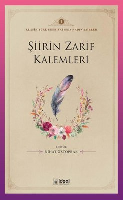

من البيت الشعري إلى القلب
أبيات اختارها الأساتذة: الجزء الثاني
الحلقة ٢٣: ما الأبيات المفضلة لدى أساتذة الأدب التركي الكلاسيكي؟
Nihat Öztoprak · 29:29 ·
النص بالتركية (لغة الحلقة الأصلية)
الوصف
B23
Klasik Türk edebiyatı profesörlerinin en sevdiği beyitler hangileri?
Profesör Doktor Nihat Öztoprak ve Doçent Doktor Bilge Karga Göllü, Beyitten Gönüle programının bu bölümünde “Üstatların Seçtikleri” çalışmasının sonuçlarını konuşmaya devam ediyor.
Geçen bölümde Şeyh Galib’in “Hoşça bak zatına…” beyti birinci sırada yer almıştı. Bu bölümde ise ikinci ve üçüncü sıradaki beyitler, hocaların bu beyitleri neden seçtikleri ve şiirlerde hangi temaların öne çıktığı ele alınıyor.
Nabi’nin hayatın iniş çıkışlarını anlatan beyti, Hayali’nin meşhur “Cihan ârâ cihan içindedir…” mısraları ve Fuzuli’nin yalnızlığı anlatan güçlü beyti üzerinde özellikle duruluyor.
Programda ayrıca 306 farklı beyit arasından en çok dile getirilen şairin Fuzuli olduğu, ardından Şeyh Galib, Baki ve Nabi gibi büyük isimlerin geldiği anlatılıyor.
Anlam mı daha önemli, ahenk mi? Bir beyit neden insanın hafızasında yıllarca kalır? Şair mi öne çıkar, yoksa şiirin taşıdığı hikmet mi?
Beyitten Gönüle, Profesör Doktor Nihat Öztoprak ve Doçent Doktor Bilge Karga Göllü’nün sohbetiyle Seyf TV’de.
00:15 Giriş
00:23 Geçen Bölümde Ne Konuşuldu?
00:56 Doçent Doktor Bilge Karga Göllü Yeniden Konuk
01:22 Geçen Haftanın Birinci Beyti
01:55 İkinci Sıradaki Beyit Hangisi?
02:25 Nabi’nin Beyti
02:46 Hayali’nin Beyti de İkinci Sırada
03:00 Bu Beyitler Neden Tercih Edildi?
03:25 Nabi Beytinde Hayat ve Kader
04:06 Hayatın Geçiciliği
04:34 Derin Bir Hayat Tecrübesi
05:03 Fatih Sultan Mehmed’in Beyti
05:58 Hayali’nin “Cihan Ârâ” Beyti
06:11 Beyitte Anlam ve Ses
06:45 İnsan Teselli Eden Beyit
07:10 Hayali’nin Beytinde Felsefi Derinlik
07:46 Beyitler ve Hatıralar
08:37 Üçüncü Sıradaki Beyit
08:43 Fuzuli’nin Yalnızlık Beyti
09:05 Yalnızlığı En Güzel Anlatan Mısralar
09:34 Eski Şiir ile Yeni Şiir Arasında Bağ
10:34 Günümüzün En Büyük Derdi Yalnızlık mı?
11:15 Kalabalık İçinde Yalnızlık
12:06 Necati’nin Yalnızlık Beyti
12:37 Yalnızlığı Anlatan İki Büyük Şair
12:45 Nezaketi Anlatan Beyit
13:24 “Baki Kalan Bu Kubbede Bir Hoş Sada İmiş”
13:37 Kanuni Sultan Süleyman’ın Beyti
13:48 Hocalar Neden Bu Beyitleri Seviyor?
14:27 Anlam ve Ahenk Birlikte mi?
15:20 Şiirde Sesin Gücü
16:42 En Çok Tercih Edilen Şair Kim?
16:51 Fuzuli Zirvede
17:08 Çalışmada Kaç Farklı Beyit Var?
17:34 Ortak Edebî Zevk
18:10 Fuzuli Neden Öne Çıktı?
18:29 Şeyh Galib, Baki ve Nabi
19:06 Mehmet Akif Ersoy da Seçildi mi?
21:13 Anonim Beyitler Neden Çok Seviliyor?
21:40 Şairin Adı mı, Hikmeti mi Önemli?
23:23 Bu Çalışma Ne Kazandırdı?
24:12 Beyitlerle Yaşayan Hocalar
25:18 Kitabın Kapağındaki Şeyh Galib Beyti
26:27 Profesör Doktor Ali İhsan Öbek’in Katkısı
27:07 “İlim, Aşk, Nezaket ve Zahmettir”
28:20 Ortak Bir Antoloji Nasıl Oluştu?
28:42 Aşk Olmadan Meşk Olmaz
29:07 Çalışmanın Ardındaki Emek
29:29 Programın Sonu
29:59 Şeyh Galib’in Beytiyle Veda
30:31 Kapanış
📚 Kitapları Almak İçin :https://www.ktbkitap.com/

كتب المتحدث


Leylâ Hanım: Klasik Türk Edebiyatında Kadın Şairler 4
شراء

Şiirin Zarif Kalemleri: Klasik Türk Edebiyatında Kadın Şairler 1
شراء

Okuyup Yazarak Yaşamak: Prof. Dr. Kemal Yavuz Armağanı
شراء
من البرنامج نفسه

من البيت الشعري إلى القلب
ما الذي يؤدي بالعالم إلى الخراب؟
Nihat Öztoprak 6:49

من البيت الشعري إلى القلب
ما السعادة الحقيقية؟ بيت يحمل العبرة لمراد الثالث
Nihat Öztoprak 6:46

من البيت الشعري إلى القلب
الأبيات التي اختارها الأساتذة
Nihat Öztoprak 36:15

من البيت الشعري إلى القلب
لماذا جئنا إلى هذه الدنيا؟
Nihat Öztoprak 9:17

من البيت الشعري إلى القلب
لا تسقط العاصفة من استقام في حياته!
Nihat Öztoprak 14:19

من البيت الشعري إلى القلب
كيف نفهم بيتا شعريا؟ وما شرح النصوص؟
Nihat Öztoprak 19:25

من البيت الشعري إلى القلب
كيف تظلم المعصية القلب؟
Nihat Öztoprak 8:57

من البيت الشعري إلى القلب
كلمة للسلطان سليم الأول تدعو الجميع إلى التفكير
Nihat Öztoprak 8:39